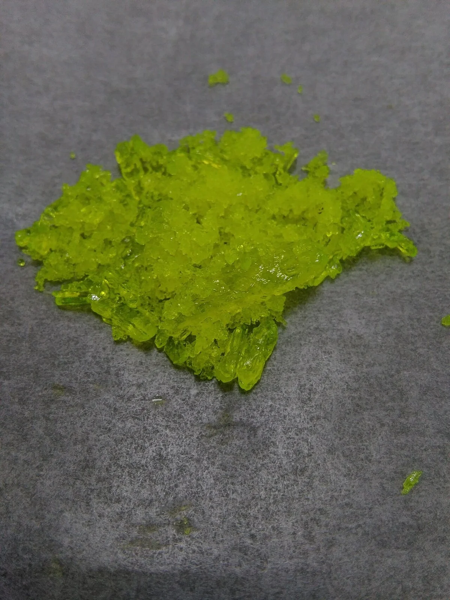
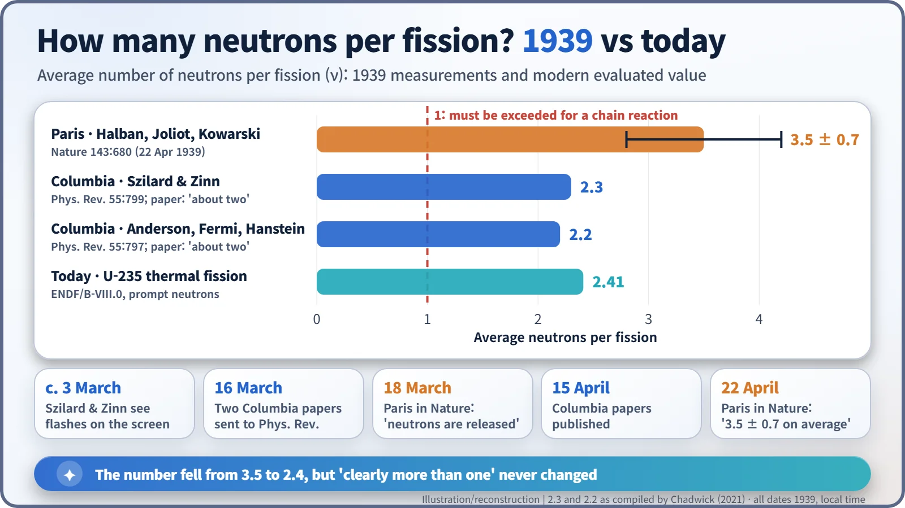
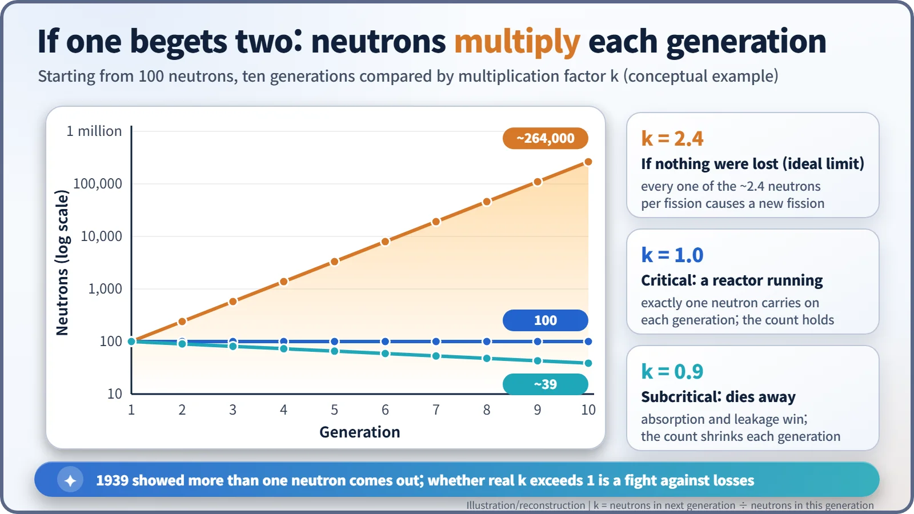

Nuclear History · 066
Three and a Half, or Two? — The 1939 Discovery of Fission Neutrons
Flashes on an oscilloscope in New York and a tank of uranium solution in Paris answered the question every chain reaction depends on.
In March and April 1939, teams at Columbia University in New York and the Collège de France in Paris showed that a splitting uranium nucleus releases fresh neutrons: about two per neutron absorbed at Columbia, 3.5 ± 0.7 per fission in Paris (today's value is about 2.4). More than one meant a chain reaction had become plausible, but not yet proven.
Three and a half, or two?
3.5 and 2.4. Both numbers answer the same question: when a uranium nucleus splits, how many neutrons fly out? The first was the answer three physicists in Paris published in April 1939. The second is the value in today's textbooks. They are quite far apart, yet in the spring of 1939 the exact figure hardly mattered. What mattered was a simpler question. Was the answer bigger than one?
Why "more than one" was the whole game
News of nuclear fission crossed the Atlantic in January 1939, and within days laboratories on both sides of the ocean had repeated the experiment. The next question followed naturally: does a splitting nucleus also release fresh neutrons?
Think of a chain letter. If everyone who receives it sends it on to two friends, it soon reaches the whole town. If nobody sends it on, it stops with the first person. Neutrons work the same way. Only if each fission frees more than one new neutron can those neutrons go on to split other nuclei, so that the reaction keeps itself going. That is a chain reaction.
No one had been chasing this question longer than the Hungarian-born physicist Leo Szilard (1898–1964), who had been imagining a neutron chain reaction since 1933. There was reason for hope. The two fragments of a split uranium nucleus are heavily overloaded with neutrons, so physicists such as Enrico Fermi expected a few spare neutrons to "boil off". [3]
Flashes on a screen, seventh floor of Pupin Hall
Szilard secured a three-month guest appointment at Columbia University in New York and paid for the research with borrowed money. His partner was the Canadian-born physicist Walter Zinn (1906–2000). On the seventh floor of Columbia's Pupin Hall they used a radium–beryllium neutron source to bombard uranium. The logic was neat: if neutrons came out faster than the ones going in, the extra fast neutrons could only have been made by fission. [4]
In early March 1939 (the date usually given is 3 March) they switched the apparatus on, and flashes appeared on the oscilloscope screen. According to a story often told, at first nothing showed at all, until Zinn noticed the oscilloscope was not plugged in. Szilard later recalled: "We turned the switch and saw the flashes. We watched them for a little while and then we switched everything off and went home. That night, there was very little doubt in my mind that the world was headed for grief." [4] [6]
On another floor of the same building, Fermi and Herbert Anderson were running a similar experiment. On 16 March both teams sent papers to Physical Review, and they agreed: for each neutron absorbed, about two neutrons came out. [2] [4]
A tank of yellow solution in Paris
In Paris, at the Collège de France, Frédéric Joliot (1900–1958), Hans von Halban (1908–1964) and Lew Kowarski (1907–1979) chose a different method. They placed a neutron source at the centre of a tank of uranyl nitrate solution, a uranium salt dissolved in water, and compared how the neutrons spread out with the same set-up using a solution that contained no uranium. If neutrons were more plentiful and reached farther when uranium was present, fission must be adding neutrons of its own.

The Paris group got into print first, announcing in Nature on 18 March that neutrons are released in fission. On 22 April they followed with a number: 3.5 ± 0.7 neutrons per fission on average. The two Columbia papers appeared on 15 April. In early February Szilard had written to Joliot urging him not to publish such results, fearing that Nazi Germany would learn from them; the Paris team published anyway. That collision between science's habit of openness and the fear of war is a story of its own. [1] [5]

From 3.5 down to 2.4
Today's evaluated value for uranium-235 split by slow neutrons is about 2.4 neutrons per fission (2.41 for the prompt neutrons alone). The 1939 measurements had large error bars; around that time, uncertainties of 25–50% in nuclear data were common. Yet all three laboratories agreed on the one thing that counted: clearly more than one. [5]
That did not prove a chain reaction would work, and this is the crucial point. Not every neutron goes on to cause another fission. Some are captured by nuclei that do not split or by impurities; others simply escape from the material. Physicists capture the net result in the multiplication factor, k: the number of neutrons in the next generation divided by the number in this one. If k is above 1, the reaction grows; at exactly 1 it holds steady; below 1 it dies out. Even with 2.4 neutrons per fission, losses can drag k far below 1. What 1939 established was a necessary condition, a starting line, not the finish.

When a possibility became homework
Still, the measurements changed the question. It was no longer "Is a chain reaction possible?" but "How do we beat the losses?" Which kind of uranium splits most readily? How large must the lump be? In early May the Paris team filed three patents, covering a device for producing energy, its stabilisation and control, and an explosive device (sources give filing dates between 1 and 4 May). These early measurements also fed into later British estimates of the critical mass. [5]
A self-sustaining chain reaction that beat the losses arrived on 2 December 1942, under the stands of a sports stadium at the University of Chicago. It was led by Fermi, the same man who had been counting neutrons in Pupin Hall in the spring of 1939. [3]